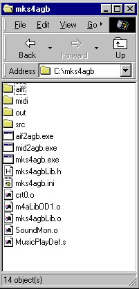

|  | Create a directory structure like the one on the left for installing the
system. In this tutorial, a directory called Mks4agb was created on Drive C. From now on, this directory will be called the Work Directory . The execution path must pass through the Work Directory. Please place the following files in the Work Directory. mks4agb.exe aif2agb.exe mid2agb.exe mks4agb.ini MusicPlayDef.s mks4agbLib.o mks4agbLib.h crt0.o SoundMon.o m4aLibOD1.o m4aLibUSC.o Next, create the following directories in the same Work Directory. aiff : Waveform Data File Input Directory midi : Song Data File Input Directory out : Sound Objects Output Directory src : Source Files Output Directory |
| The above concludes the installation of the mks4agb system. Please proceed to the next category. Next: Handling Waveform Data Files and Song Data Files |
| Please refer to the following for more information regarding this topic. Description of Directories (Link to the mks4agb System Manual) * To return to this page from the above link, please use the Back button. |
[ | Back | User's
Manual Table of Contents | Tutorial Table of Contents | Next | ]